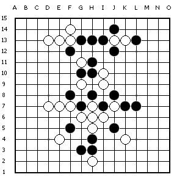

用棋子摆出含VCF习题的“茶”字
#1 用棋子摆出含VCF习题的“茶”字 作者：冰雪笑醉 发表时间：2010-12-4 18:28:20
前2天五子茶馆雪飞老师给同学们出了道题目，用棋子摆出茶字并且含VCF习题的，，我们很多同学都试着摆了，蛮有意思的，大家没事的时候不防都摆摆看，［ 逆刃 于 2010-12-4 18:51:37 时奖励此帖[金币加 100 威望加1］
［ 被感动的人 于 2010-12-4 19:32:32 时花20金币送鲜花一朵］
［ 炫飞冰弦 于 2010-12-6 10:56:42 时花20金币送鲜花一朵］
［ 流逝 于 2011-1-12 15:11:04 时奖励此帖[金币加 100 威望加1］
［ 流逝 于 2011-1-12 15:11:16 时奖励此帖[金币加 100 威望加1］
［ 流逝 于 2011-1-12 15:11:40 时奖励此帖[金币加 100 威望加1］
［ 流逝 于 2011-1-12 15:11:56 时奖励此帖[金币加 100 威望加1］
［ 炫飞水月 于 2011-6-26 9:44:11 时花20金币送鲜花一朵］
［ 游戏人间 同学于 2013-7-21 19:37:12 时花30000金币送鲜花1500朵］
#2 Re:用棋子摆出含VCF习题的“茶”字 作者：与郎共五 发表时间：2010-12-4 21:46:04
i8.k8.j6.k5.k9.l10.m9.解禁后h14四三胜。［ 冰雪笑醉 于 2010-12-4 22:57:12 时花20金币送鲜花一朵］
［ 炫飞冰弦 于 2010-12-6 10:57:01 时花20金币送鲜花一朵］
#3 Re:用棋子摆出含VCF习题的“茶”字 作者：雪飞 发表时间：2010-12-5 0:20:34
这个题目是为《五子茶刊》创刊号设计的，我找到6个V的方法，最后题目要求只好改成以最短手顺获胜。要少于8步V，有兴趣的朋友可以找一下。［此帖子已被 雪飞 在 2010-12-5 0:39:17 编辑过］
［ 掌棋宣传员 于 2010-12-5 0:52:09 时花20金币送鲜花一朵］
［ 冰雪笑醉 于 2010-12-5 2:31:08 时花20金币送鲜花一朵］
［ 炫飞冰弦 于 2010-12-6 10:57:10 时花20金币送鲜花一朵］
#4 Re:用棋子摆出含VCF习题的“茶”字 作者：与郎共五 发表时间：2010-12-5 1:05:29
k11的三是假活三。回楼上。